開始之前
- 相機：直接從記憶卡複製。
- 手機：用傳輸線、AirDrop、Google 相簿／雲端硬碟的「原始畫質」下載，或 LINE 以外的方式傳。
- 請同事提供照片時：請他們給原始檔（隨身碟、雲端硬碟共用），不要丟 LINE 群組。
- 真的只有 LINE 的照片也能整理，但要自己檢查分組和日期。
- 瀏覽器：請用電腦上的 Chrome 或 Edge。「存到資料夾」「相簿庫」「回顧短片」需要它們才完整；Safari、Firefox 可以分析與下載 ZIP。
- 不用安裝、不用登入：打開網頁就能用；也可以把單一 HTML 檔存在電腦裡離線開啟。
- 照片不離開電腦：分析、挑片、海報、短片都在你的電腦裡完成。只有你自己按下 AI 寫說明／貼文等功能時，才會送出縮小的照片，而且送出前畫面會先告訴你（見 資安與隱私）。
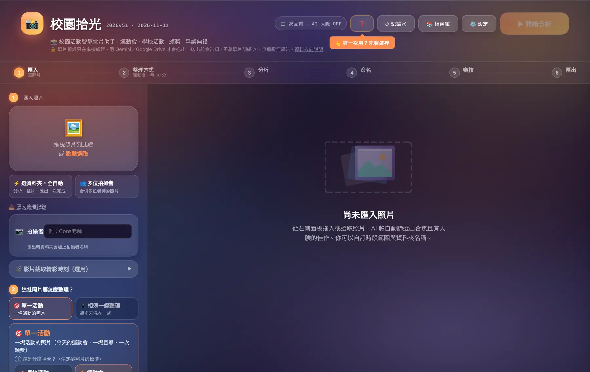
1匯入照片
支援相機、手機、LINE 轉傳的照片；HEIC 會自動轉檔。
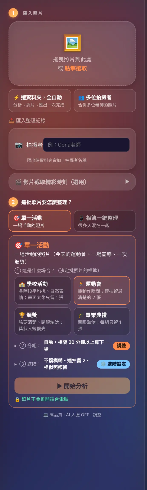
- 把照片（或整個資料夾）拖曳到左上角的框，或按 點擊選取。
- 拍攝者（可不填）：填了之後，匯出的資料夾名稱會加上拍攝者。
- 匯入完成，框裡會顯示「已載入 N 張照片」。
其他匯入方式
- ⚡ 選資料夾，全自動：選一個資料夾，分析→挑片→匯出一次做完（見 全自動）。
- 👥 多位拍攝者：好幾位老師各拍一批，合併成同一場活動。
- 🎬 影片截取精彩時刻：從活動影片裡自動抓出清楚的畫面當照片。
- 📥 匯入整理記錄：把上次存下來的整理進度接著做。
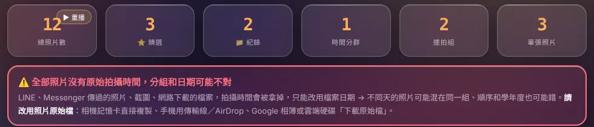
2選整理方式
先回答一個問題：這批照片是「一場活動」還是「很多天混在一起」？系統會依照片的日期範圍給你建議。
| 整理方式 | 什麼時候用 | 接著要選 |
|---|---|---|
| 🎯 單一活動 | 今天的運動會、一場宣導、一次頒獎 | 場合（決定挑照片的標準） |
| 📱 相簿一鍵整理 | 手機相簿、整學期的照片，很多場混在一起 | 怎麼拆：一天一組／半天一組／相隔 40 分鐘 |
單一活動：四種場合
| 場合 | 挑片方式 |
|---|---|
| 🏫 學校活動 | 紀錄模式：各時段平均保留、自然表情；只拿掉拍壞與明顯重複的 |
| 🏃 運動會 | 抓動作瞬間；連拍只留最清楚的 2 張 |
| 🏆 頒獎 | 紀錄模式：臉要清楚、閉眼的淘汰 |
| 🎓 畢業典禮 | 紀錄模式：閉眼淘汰；每組留最好的 |
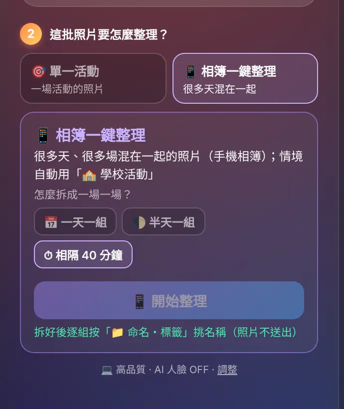
分組方式
- 自動（依間隔）：兩張照片隔超過設定的分鐘數，就算下一組。
- 依時段：運動會有賽程表時最好用。可以貼上賽程表、匯入時段，或用 時間記錄器 在現場按。
選好之後按右上角的 ▶ 開始分析。36 張大約幾秒，上千張約幾分鐘，進度會顯示在畫面上。
3分析結果怎麼看
| 數字 | 意思 |
|---|---|
| 總照片數 | 這次匯入幾張；按 ▶ 重播 可以再看一次整理動畫 |
| ⭐ 精選 | 清楚、有人、構圖好的照片，適合拿去發布 |
| 📁 紀錄 | 品質普通但值得留作紀錄的照片（紀錄模式才有） |
| 時間分群 | 分成幾組（幾場活動／幾個時段） |
| 連拍組 | 偵測到幾組連拍，每組只留最好的 |
4命名・標籤
每一組按 📁 命名・標籤，名字取好，之後在相簿庫才找得到。
- 學年度、學期會依拍攝日期自動算好；日期怪怪的會出現黃色提醒（常見原因：相機時間沒設定）。
- 活動名稱：上方是依月份推薦的常見活動，點一下就填好；也可以在搜尋框找（防災、家庭、研習…），或自己打。
- 補充（可不填）：例如「四年級大隊接力」。
- 確認後，資料夾名稱會是「114學年度第1學期_運動會」這樣的格式。
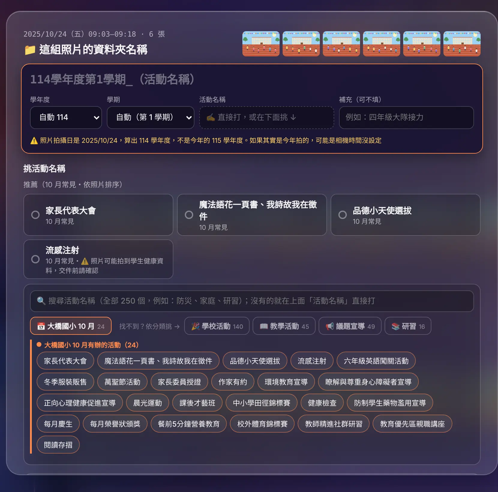
5審核照片
相信 AI 就直接匯出；想自己看過一遍也可以。
| 模式 | 說明 |
|---|---|
| 🤖 AI 直出 | 不用看，直接匯出 AI 挑好的照片。趕時間用這個。 |
| 👁️ 手動審核 | 每張照片可以自己決定要不要；連拍會排在一起方便比較。 |
| ▶ 逐張看 | 一張一張放大看：← → 換張，空白鍵 或 Enter 切換入選／淘汰，Esc 關閉。 |
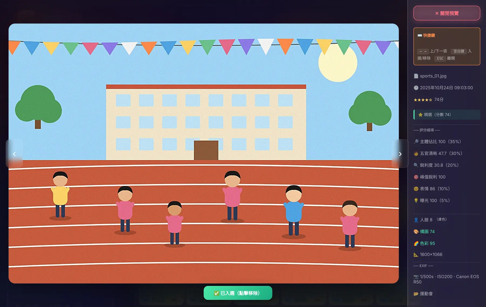
6匯出
| 方式 | 適合 |
|---|---|
| 📚 存進相簿庫（推薦） | 第一次先選一個固定資料夾，之後每次活動都自動依「學年度／分類／活動」歸檔，還能搜尋、做學年回顧。 |
| 存到資料夾 | 這次的照片放進指定資料夾就好。 |
| 下載 ZIP | Safari／Firefox，或要把整包傳給別人。 |
| 成果包 | 直接做成果表、AI 說明、FB 貼文、海報與短片（見 成果包）。 |
- 尺寸：預設 Full HD 1920px（每張約 800KB），上傳網站、傳 LINE 都夠用；要留原圖可以改。
- 📄 下載篩選報告：列出每張照片入選或淘汰的原因。
- 📤 匯出整理記錄：把這次的分組、命名、勾選存成檔案，下次或換台電腦可以接著做。
相簿庫與學年回顧
右上角 📚 相簿庫。它就是你電腦裡的一個資料夾，校園拾光幫你記住每張照片屬於哪場活動。
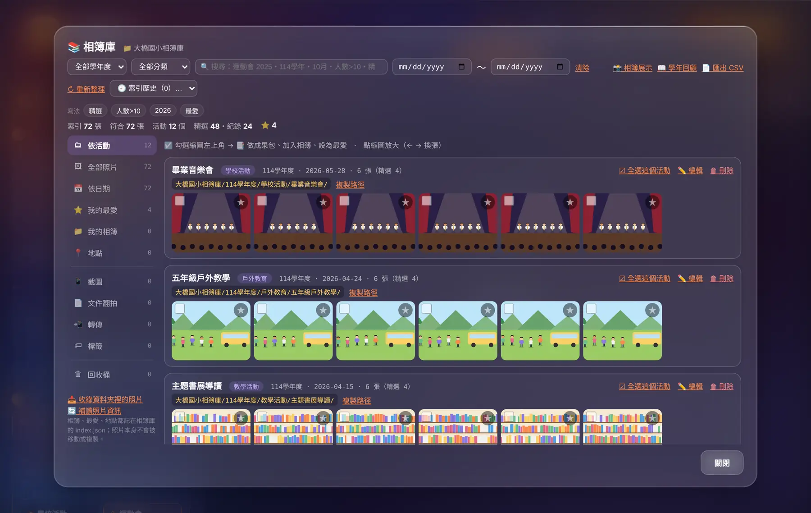
- 勾選照片之後可以：做成果包、加入相簿、標成最愛、移到回收桶。
- 全選此活動：一次選整場，再按成果包最快。
- 下載索引、匯出 CSV：備份相簿庫的活動清單。
學年回顧
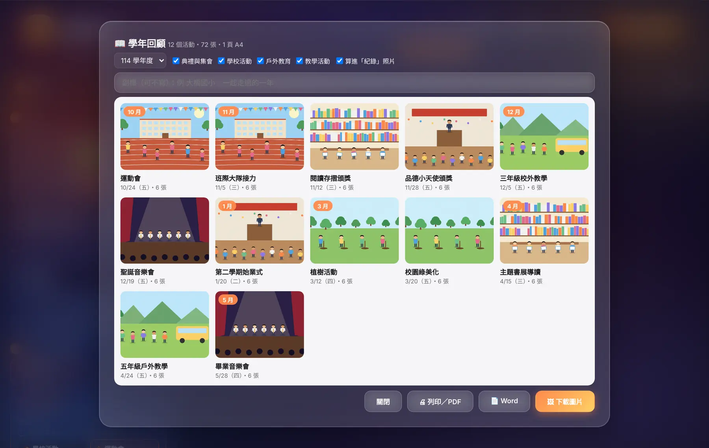
成果包：照片說明與 FB 貼文
從相簿庫勾選照片後按成果包，或在匯出區直接按 成果包。
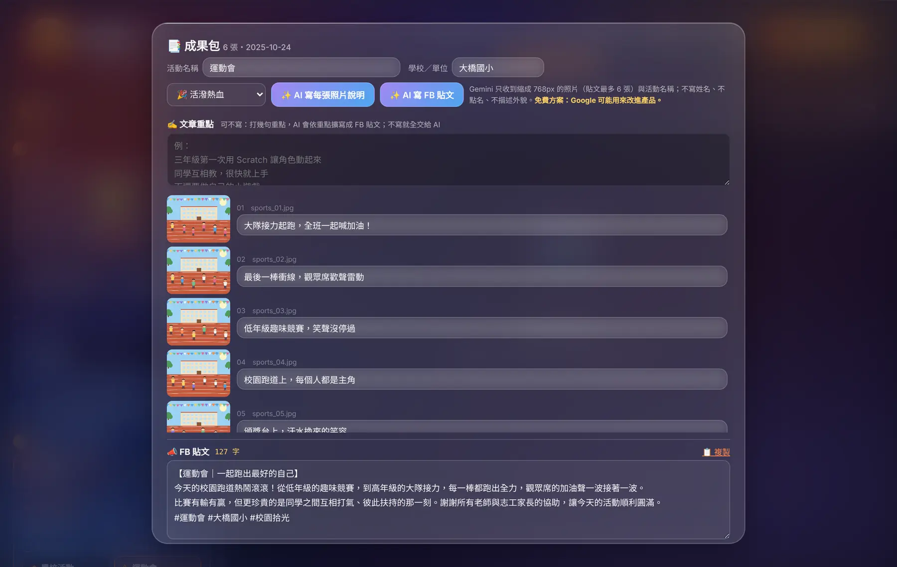
- 確認活動名稱與學校／單位。
- 選文字風格（活潑熱血、溫馨、正式…）。
- 按 ✨ AI 寫每張照片說明：每張照片產生一句說明。
- （可不寫）在 ✍️ 文章重點 打幾句想強調的事，再按 ✨ AI 寫 FB 貼文，會寫成 200–300 字的貼文；按 📋 複製 貼到粉專。
- 下載成果表（Word）或整包 ZIP。
分享版照片
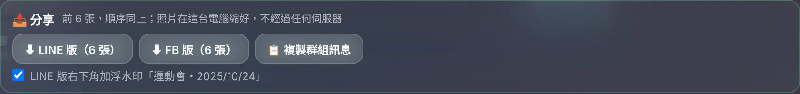
活動海報
在成果包往下捲就會看到。海報是在你的電腦裡畫出來的。
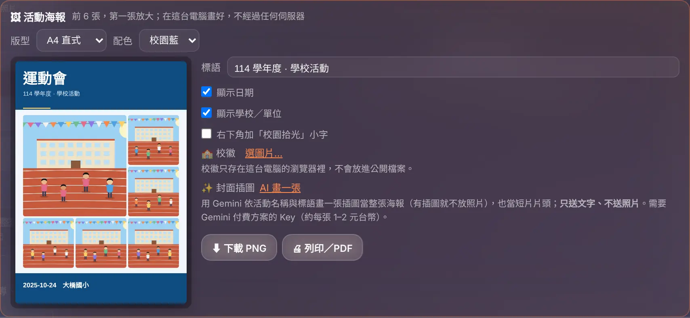
- 版型：A4 直式（列印張貼）、IG 方形、限時動態直式。
- 配色：多種主題色可換。
- 標語：預設會帶入學年度與分類，可以改成自己的一句話。
- 校徽：上傳一次就記在這台電腦，下次自動帶入。
- ✨ AI 畫一張封面插圖（可不用）：依活動名稱畫一張插圖鋪滿整張海報，有插圖時就不放照片。只送出文字、不送照片；需要 Gemini 付費方案的 Key。
- 完成後按 ⬇ 下載 PNG 或 🖨 列印／PDF。
回顧短片
把入選照片做成有片頭、轉場、配樂的 MP4。全部在你的電腦裡轉檔，不經過任何伺服器。
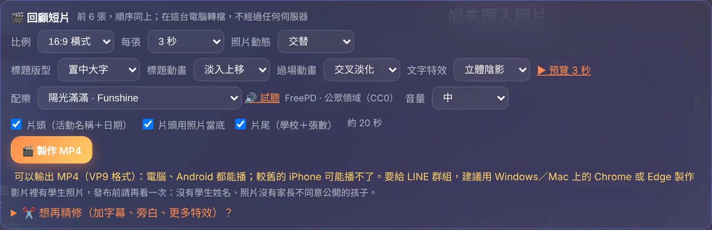
| 選項 | 說明 |
|---|---|
| 比例 | 16:9 橫式（電視、YouTube）或 9:16 直式（Reels、Shorts、限時動態） |
| 每張 | 每張照片停留 2／3／4 秒 |
| 標題版型・標題動畫 | 片頭標題的位置與進場方式 |
| 過場動畫 | 照片之間怎麼切換（交叉淡化、滑動、縮放…） |
| 文字特效 | 照片說明文字的樣式（立體陰影、描邊、漸層…） |
| 配樂 | 內建 10 首公眾領域（CC0）輕快配樂，按 🔊 試聽；也可以選自己的音樂檔 |
| 片頭／照片說明／片尾 | 要不要片頭（活動名稱＋日期）、每張的說明文字、片尾（學校＋張數） |
- 按 ▶ 預覽 3 秒 先看效果。
- 按 🎬 製作 MP4。畫面會出現醒目的進度框，顯示百分比、目前畫面與預估剩餘時間。
- 做完會自動下載。製作中請不要把分頁切到背景，速度會變慢。
時間記錄器
右上角 ⏱ 記錄器。運動會這種「一個項目接一個項目」的活動最好用。
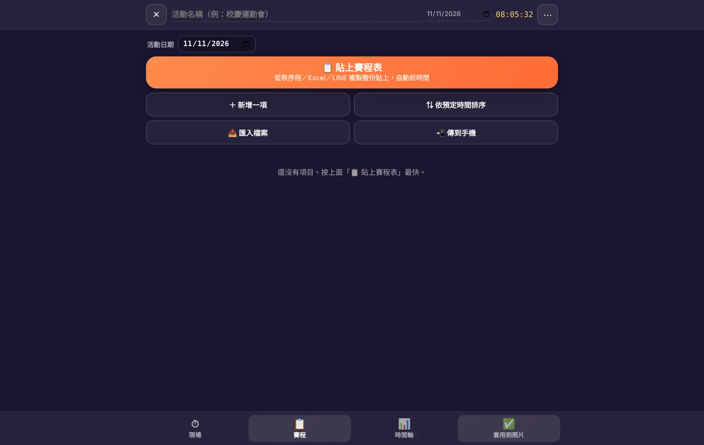
- 活動前：按 📋 貼上賽程表，從 Word、Excel 或 LINE 複製賽程貼上，會自動辨識項目與時間。
- 活動中：每個項目開始時按一下，記下實際時間。
- 活動後：把時段匯出，回到電腦在「依時段」分組裡匯入，照片就會照項目分好。
全自動・多位拍攝者
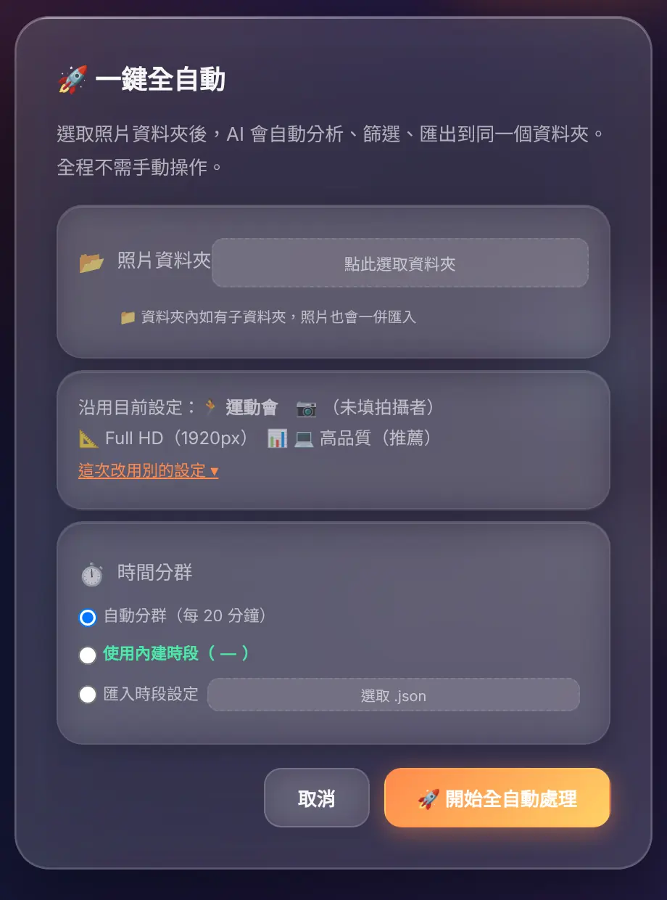
⚡ 一鍵全自動
選一個照片資料夾，系統自動分析、挑片，並把結果匯出到同一個資料夾裡，全程不用再按任何東西。沿用目前的場合與尺寸設定，適合固定流程、照片很多的時候。
👥 多位拍攝者
每位老師的照片各匯入一次並填上拍攝者，系統會依時間把大家的照片合在一起分組，重複的畫面只留最好的。
AI（Gemini）設定
右上角 ⚙️ 設定 → ✨ AI。只有要用「AI 寫說明、貼文、畫插圖」才需要設定；挑照片不需要。
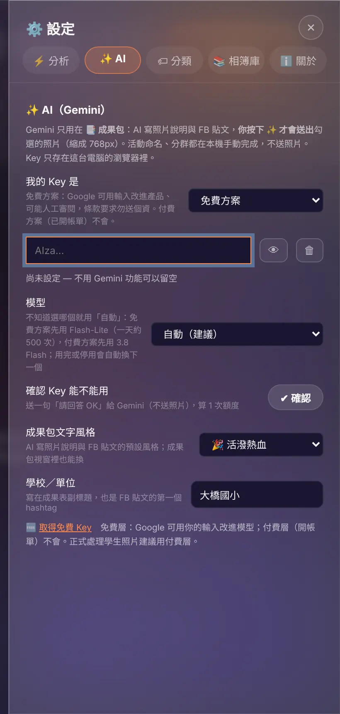
- 到 Google AI Studio 申請 Gemini API Key（免費）。
- 方案：照實選「免費方案」或「付費方案」。選錯會讓免費 Key 很快碰到上限。
- 貼上 Key，按 ✔ 確認。系統會實際連線測試，告訴你 Key 能不能用、哪些模型可用。
- 模型：一般選「自動（建議）」就好，遇到忙線或額度用完會自動換下一個模型。
| 免費方案 | 付費方案 | |
|---|---|---|
| 寫照片說明、FB 貼文 | 可以，每天有次數上限，速度較慢 | 可以，較快 |
| 畫海報插圖 | 不行 | 可以（每張約新台幣 1–2 元） |
| 資料用途 | Google 可能用來改進產品 | 不會拿去訓練 |
分析設定
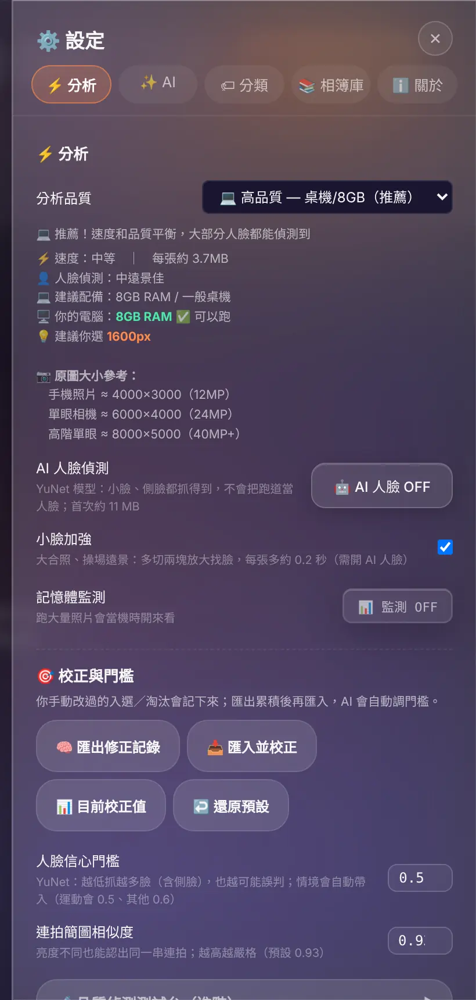
- 分析品質：預設「高品質」。電腦比較舊、照片上千張時可以調低，速度較快。
- AI 人臉：打開後會偵測人臉、閉眼，挑人像更準。模型下載一次後就在本機執行，不會送出照片。
- 入選門檻、連拍相似度：覺得挑得太嚴或太鬆時再調整。
- 備份／還原設定：換電腦時把設定帶走。
設定裡還有 🏷 分類（各月份常見活動、議題宣導、研習名稱）與 📚 相簿庫 分頁，可以加入自己學校常用的活動名稱。
資安與隱私
首頁標題下方的「資料去向說明」，或設定裡的 🔒 資安與隱私，隨時可以查。
| 功能 | 會送出什麼 |
|---|---|
| 匯入、分析、挑片、命名、匯出、相簿庫、海報、短片 | 不送出，只在這台電腦 |
| AI 人臉 | 不送照片，只下載模型到本機 |
| AI 寫說明／貼文 | 你勾選的照片（縮到 768px）與活動名稱 → Google Gemini |
| AI 畫插圖 | 只有文字（活動名稱等）→ Google Gemini |
| 相簿庫「查地標名稱」 | 約略座標，不含照片 → OpenStreetMap |
沒有帳號、沒有追蹤、沒有廣告；也不會拿你的照片訓練任何 AI。
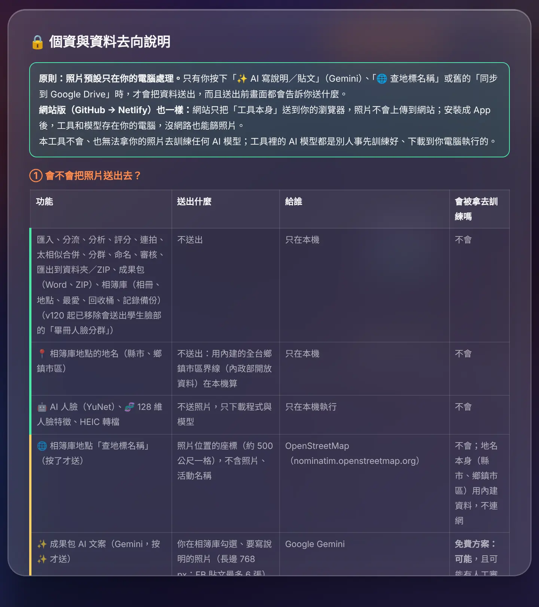
常見問題
照片分組怪怪的，不同天的被分在一起？
通常是照片沒有拍攝時間（LINE 轉傳、截圖、修圖軟體另存都會把它拿掉）。請盡量用相機或手機的原始檔；相機的日期時間也要先設定正確。
有些我想要的照片沒有入選？
學校活動、頒獎、畢業典禮已經是「紀錄模式」，只會拿掉拍壞和明顯重複的。還是想留，切到 👁️ 手動審核 把它勾回來；或到設定 → 分析把入選門檻調低。
「存到資料夾」「相簿庫」按了沒反應？
這兩個功能需要 Chrome 或 Edge。Safari、Firefox 請改用「下載 ZIP」。
AI 一直顯示忙線或額度用完？
到設定 → AI 確認方案選的是你實際的方案，按 ✔ 確認 測試 Key。免費方案每天有次數上限，用完要等隔天；模型選「自動」可以讓系統自己換到還有額度的模型。
回顧短片做很久？
請用 Chrome 或 Edge、製作中保持在這個分頁。照片張數多、每張秒數長都會比較久。真的卡住時按 📋 複製診斷 回報。
換電腦要怎麼搬？
相簿庫資料夾整個複製過去，再到新電腦的相簿庫選那個資料夾即可；設定用「備份／還原設定」帶走。做到一半的整理用「匯出整理記錄」。
配樂可以用在公開影片嗎？
內建 10 首是公眾領域（CC0）音樂，可以自由使用、不需標示。自己選的音樂請自行確認授權。